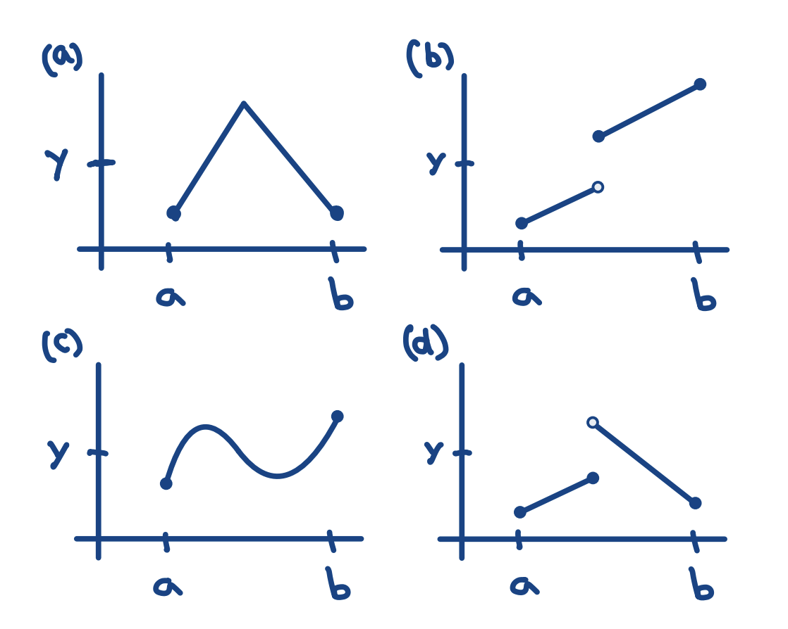

Cutting in Half
M 111
Oxford College of Emory University Tien Chih
Solve: \[\sqrt{x^3}+\cos(x)-5=0\]
😥
Initialization
Let \(a_0 < b_0 \) and \(f(a_0), f(b_0)\) be opposite signs.
Next Step
Let \(c=\frac{a_n+b_n}{2}\).
If \(f(a_n), f(c)\) have the same sign, let \(a_{n+1}=c, b_{n+1}=b_n\).
Next Step
Let \(c=\frac{a_n+b_n}{2}\).
If \(f(a_n), f(c)\) have opposite signs, let \(a_{n+1}=a_n, b_{n+1}=c\).
Termination
Let \(c=\frac{a_n+b_n}{2}\).
If \(f(c)=0\) we are done!
Then repeat...
Let \(c=\frac{a_n+b_n}{2}\).
etc..
Suppose \(f(a_n) < 0\). If \(f(c)>0\) what sign is \(f(a_{n+1})\)? If \(f(c)<0\) what sign is \(f(a_{n+1})\)?
What about \(f(c)=0\)?
What does this say about the \(b_n\)?
\[\begin{array}{ccc} \hline \text{Interval: } & [a_0, b_0]\\ \text{Length: } & b_0-a_0\\ \hline \end{array}\]
\[\begin{array}{ccccc} \hline \text{Interval: } & [a_0, b_0] & \supset & [a_1, b_1]\\ \text{Length: } & b_0-a_0 & > & \frac{b_0-a_0}{2} \\ \hline \end{array}\]
\[\begin{array}{ccccccc} \hline \text{Interval: } & [a_0, b_0] & \supset & [a_1, b_1] & \supset & [a_2, b_2]\\ \text{Length: } & b_0-a_0 & > & \frac{b_0-a_0}{2} & > & \frac{b_0-a_0}{2^2} \\ \hline \end{array}\]
\[\begin{array}{ccccccccc} \hline \text{Interval: } & [a_0, b_0] & \supset & [a_1, b_1] & \supset & [a_2, b_2] & \supset & \cdots & \supset & [a_n, b_n] & \supset & \cdots\\ \text{Length: } & b_0-a_0 & > & \frac{b_0-a_0}{2} & > & \frac{b_0-a_0}{2^2} & > & \cdots & > & \frac{b_0-a_0}{2^n} & > & \cdots\\ \hline \end{array}\]
\[\begin{array}{ccccccccc} \hline \text{Interval: } & [a_0, b_0] & \supset & [a_1, b_1] & \supset & [a_2, b_2] & \supset & \cdots & \supset & [a_n, b_n] & \supset & \cdots\\ \text{Length: } & b_0-a_0 & > & \frac{b_0-a_0}{2} & > & \frac{b_0-a_0}{2^2} & > & \cdots & > & \frac{b_0-a_0}{2^n} & > & \cdots\\ \hline \end{array}\]
Since the width of the intervals will be as small as we please, and all the intervals are all nested, there is a unique \(c\) which is contained in all the intervals.
Swept under the rug: Archimedean Principle, LUBA, some technicalities.
Suppose \(f(a_0)<0, f(b_0)>0\). What sign is \(f(a_n)\)? \(f(b_n)\)? What does this say about \(c\)?
Why can't \(f(c)>0\)?
Intermediate Value Theorem
Let \(f(x)\) be defined on \([a,b]\) so that \(f(a), f(b)\neq 0\) and have opposite signs. Then there is a \(c, a\leq c\leq b\) so that \(f(c)=0\).
Let \(f(x)=2x^4+3x^3+4x^2\) Find \(c\) such that \(-2\leq c\leq 0\) and \(f(c)=9\).
Let \(g(x)=\cos(x)\) Find \(c\) such that \(0\leq c\leq \frac{\pi}{2}\) and \(f(c)=s\).
The IVT
Let \(f(x)\) be defined on \([a,b]\) so that \(f(a) < f(b)\) (or \(f(a) > f(b)\)). Then for any \(k\) between \(f(a), f(b)\), there is a \(c, a\leq c\leq b\) so that \(f(c)=k\).
Theorem
Let \(f(x), g(x)\) be defined on \([a,b]\) so that \(f(a) < g(a), f(b)>g(b)\) and have opposite signs. Then there is a \(c, a\leq c\leq b\) so that \(f(c)=g(c)\).
Let \(h(x)=g(x)-f(x)\). How does the IVT prove the theorem?
Bolzano-Weierstrass Extreme Value Theorem
Let \(f(x)\) be defined on \([a,b]\). Then there is a \(c, a\leq c\leq b\) so that for any \(t\in[a,b]\) \(f(c)\geq (\leq) f(t)\).
Let \(a_0=a, b_0=b, c=\frac{a_n+b_n}{2}\).
\([a_k, b_k]\) maximizes
\(f(x)\) over \([a,b]\), if for each \(x\in [a,b]\), there is a \(m\in [a_k, b_k]\) where \(f(m)\geq f(x)\).
If \([a_n, c]\) maximizes
\(f(x)\) over \([a,b]\), let \(a_{n+1}=a_n, b_{n+1}=c\).
Otherwise \([c, b_n]\) maximizes
\(f(x)\) over \([a,b]\), let \(a_{n+1}=c, b_{n+1}=b_n\).
Bolzano-Weierstrass Extreme Value Theorem
Let \(f(x)\) be defined on \([a,b]\). Then there is a \(c, a\leq c\leq b\) so that for any \(t\in[a,b]\) \(f(c)\geq (\leq) f(t)\).
Bolzano-Weierstrass Extreme Value Theorem
Why must either \([a_0, c]\) or \([c, b_0]\) maximize
\(f(x)\) over \([a,b]\)?
Why must either \([a_n, c]\) or \([c, b_n]\) maximize
\(f(x)\) over \([a,b]\)?
Bolzano-Weierstrass Extreme Value Theorem
Why must this process converge on a \([c]\) which maximizes \(f(x)\) over \([a,b]\)?
IVT
\(f(x)\) is continuous on \([a,b]\) \(\Rightarrow\) for each \(k\) between \(f(a)\) and \(f(c)\), there is a \(c, a\leq c\leq b\) where \(f(c)=k\).
For each identify if the hypothesis or conclusion of the IVT is true/false.
EVT
\(f(x)\) is continuous on \([a,b]\) \(\Rightarrow\) there is a \(c, a\leq c\leq b\) so that for each \(a\leq m\leq b\), we have \(f(c)\geq f(m)\).
For each identify if the hypothesis or conclusion of the EVT is true/false.
Let \(f(x)\) be continuous on \([a,b]\), \(a < c < b, f(c)\neq 0\).
Theorem 1
There is a \(\delta>0\) so that for any \(x, c-\delta < x < c+\delta, f(x)\) shares the same sign as \(f(c)\).
Proof of Theorem 1
Let \(0<\epsilon<|f(c)-0|\), since \(f\) is continuous, there is a \(\delta>0\) so that for any \(x, c-\delta < x < c+\delta, |f(x)-f(c)|<\epsilon<|f(c)-0|\).
Theorem 2
There is a \(\delta>0\) so that \(\displaystyle \int_{c-\delta}^{c+\delta} f(x)dx\) shares the same sign as \(f(c)\).
Proof of Theorem 2
By T1, we can pick a \(\delta\) so \(f\) on \((c-\delta, c+\delta)\) has the same sign, and so all Riemann sums \(S\) would have the same sign, including \(\underline{S^*}, \overline{S^*}\).
Corollary to Theorem 2
If for any \(a < x_1 < c\) and \(c < x_2 < b\) we have that \(\displaystyle \int_{x_1}^{x_2}f(x)dx=0\), we have that \(f(x)=0\).
Theorem 3
If \(f'(c)\neq 0\), for any \(\delta>0\), there is a \(c-\delta < x_1 < c\) and \(c < x_2 < c+\delta\) so that \(f(c)\) is in between \(f(x_1), f(x_2)\).
Theorem 3 Rephrased
If \(f'(c)\neq 0\), there is no \(\delta>0\), so that \(f(c)\) is the max/min value of \(f\) over \((c-\delta , c+\delta)\).
Theorem 3 Rephrased Again
If \(f'(c)\neq 0\), there is a \(c-\delta < x_1 < c\) and \(c < x_2 < c+\delta\) so that \(f(x_1)-f(c)\) and \(f(x_2)-f(c)\) have different signs.
Proof of Theorem 3
\(D_cf(x)\) is continuous, so by T1, there is a \(\delta>0\) so that \(D_cf(x)\) has the same sign on \((c-\delta , c+\delta)\). Since \(x-c\) changes sign at \(x=c\), and \(\frac{f(x)-f(c)}{x-c}\) doesn't, \(f(x)-f(c)\) must change signs.
Corollary to Theorem 3 (CP Theorem, Fermats Theorem)
If \(f(c)\), maximizes/minimizes \(f\) on some open interval containing \(c\), then \(f'(c)=0\).
The Fence
Suppose a farmer has 300 feet of fencing to build a rectangular fence against a river. What is the largest area it could enclose, and what would be it's dimensions?

\(A=xy, 300=2x+y\). Can I express \(A\) in terms of just \(x\) or just \(y\)? Can I find \(A\)'s extrema?'